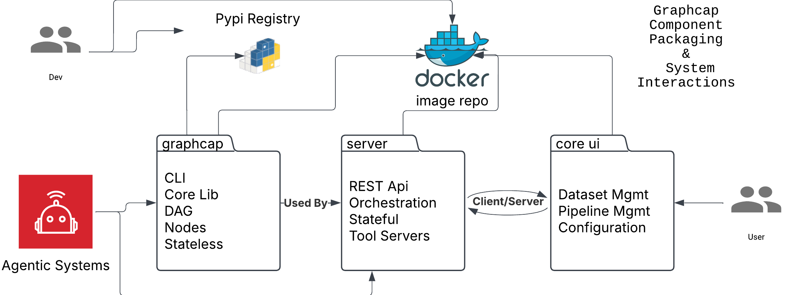
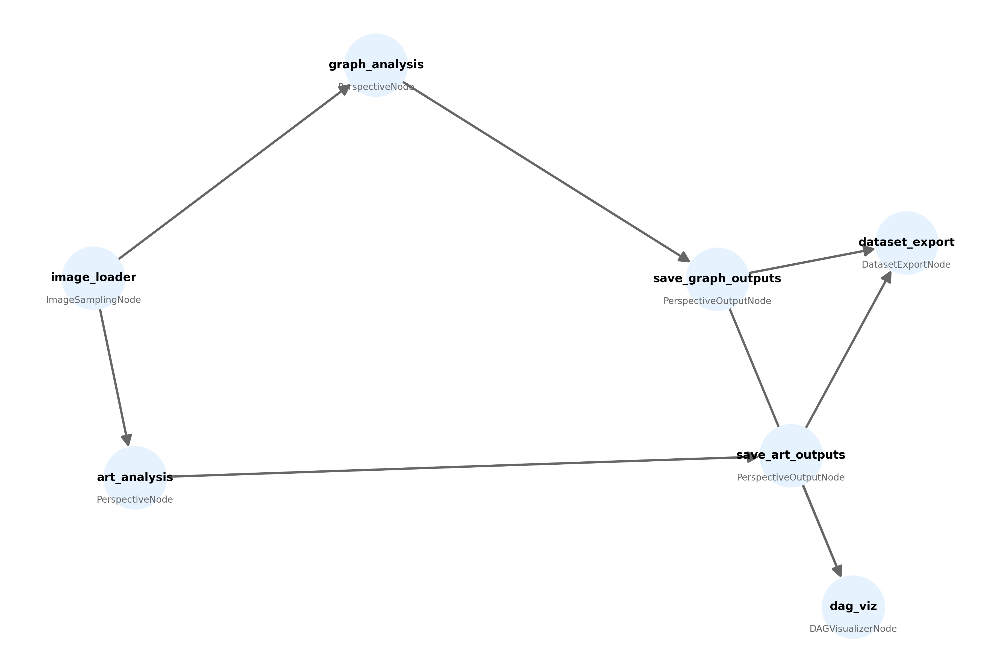

graphcap System Design#

1. Introduction#
**graphcap ** is a system for generating structured image captions (e.g., scene graphs, art critiques, attribute listings) by orchestrating image‐processing pipelines. It provides:
A DAG-driven workflow engine for orchestrating steps such as image loading, caption generation, and dataset export.
Pluggable model providers, allowing you to call into OpenAI, Gemini, or local LLMs for caption generation.
Multiple interfaces:
CLI for local usage,
REST API for server usage via FastAPI,
UI for visual, user‐friendly interactions.
Its outputs are typically structured JSON data and HTML reports, optionally assembled into datasets that can be shared or uploaded to external repositories such as Hugging Face.
2. System Overview#
2.1 Components#
graphcap Library (
graphcap)Core Python code for DAG execution, node definitions, and specialized perspectives (like scene graphs or art critic analyses).
Provides a CLI (
dag-validate,dag-run) and can run locally with only Python.
Server (
server)A FastAPI application exposing graphcap functionalities over HTTP.
Handles orchestration, multi‐user workflows, and session management.
Allows remote systems or UIs to invoke the same pipelines exposed by the library CLI.
Core UI
A (not fully shown here) front‐end interface that calls the server’s REST endpoints.
Used for dataset management, pipeline configuration, and interactive usage without coding.
Agentic Systems
Downstream consumers that can call the server or library for AI‐powered tasks.
May automate dataset creation by orchestrating pipelines programmatically.
Perspectives#
Perspectives are a core feature of the graphcap system, providing different analytical views on images. Each perspective is implemented as a node in the DAG workflow, allowing for flexible and modular image processing.
GraphCaption: Structured analysis with tags and descriptions.
ArtCritic: Artistic analysis focusing on composition and technique.
These perspectives enable the system to produce diverse outputs, catering to various use cases and requirements.
2.2 Typical Flow#
Developers publish the library to PyPI and container images to a Docker registry.
Users interact with either the CLI or the UI to configure and execute pipelines:
For local usage, the CLI triggers the DAG inside the Python environment.
For remote usage, the UI (or external systems) calls the REST API, which runs the same DAG logic on the server.
The Agentic Systems layer can also programmatically integrate with the server if advanced automation is needed.
2.3 DAG Example#
Below is an example of a dag (produced by a meta node during execution) for the current system.

3. Core Library (graphcap)#
3.1 Main CLI Entry Point#
main.pyDeclares a
click‐based CLI with commands:dag-validatefor checking DAG correctness,dag-runfor executing a DAG pipeline.
Uses
asyncioto manage asynchronous DAG runs.Discovers node classes (e.g.,
ImageSamplingNode,PerspectiveNode) from a registry so that the DAG JSON can reference them by name.
3.2 DAG and Node Infrastructure#
dag/dag.pyDefines a DAG class that reads JSON, ensures no cycles, topologically sorts nodes, and executes them in sequence.
dag/node.pyBase class for a node in the pipeline (with ID, dependencies, configuration,
executemethod, etc.).
dag/nodes/Example:
meta.pyhas aDAGVisualizerNodethat outputs a diagram of the DAG.Example:
visualizer.pyis another approach to produce DAG visualizations using NetworkX.
3.3 Caption Generation and Perspectives#
graphcap.captionbase_caption.py: Abstract base classes for caption processors; handles prompt structure, Pydantic schemas.batch_config.py: Tools for sampling images, applying model parameters, etc.perspectives/:graph:GraphCaptionProcessor(scene graph style tags, relationships). Includes HTML “graph report” and network diagram features.art_critic:ArtCriticProcessor(formal analysis of images, e.g. lines, composition). Includes Jinja templates for “art_report”.
nodes/:PerspectiveNode: Runs a chosen perspective (graph or art critic) on a set of images.PerspectiveOutputNode: Organizes outputs (logs, copying images, final files).
3.4 Dataset Handling#
dataset/dataset_manager.py: Class (DatasetManager) that takes caption outputs, optionally merges them into JSONL, and can push them to Hugging Face.nodes/export.py:DatasetExportNodefor constructing a final dataset from pipeline outputs.file_handler.py,hf_client.py,metadata.py: Utilities for writing JSON, generating dataset “cards,” handling Hugging Face integration.
3.5 I/O Nodes#
io/ImageSamplingNode: Node that reads images from disk and samples them (random, latest, incremental). Frequently the pipeline’s starting point.
3.6 Provider Integrations#
providers/clients/: Multiple Python clients offering an OpenAI‐style interface, but for various backends (OpenAI, Gemini, VLLM, Ollama, etc.).provider_manager.py: Discovers configuration from environment variables or a TOML file, then yields the correct client for a pipeline node’s provider choice.
4. Server Component (server)#
While all functionality exists in graphcap, the server layer provides a FastAPI application for remote usage:
server/app.py:Builds the FastAPI app, configures CORS, and registers routers.
Manages server lifespan events (startup, shutdown).
server/providers/router.py:Exposes endpoints to list or query available providers, do image analysis, or run pipeline tasks.
server/config/router.py:System endpoints (health checks, etc.).
The server can handle multi‐user sessions, queue jobs, and host pipelines in a more persistent environment.
Thus, the Server offers an API that wraps the DAG mechanics and provider logic found in graphcap.
5. Core UI Client (Conceptual)#
The UI is intended to communicate with the server over REST:
Image Management
Allows batch image uploads, drag‐and‐drop reordering, progress indicators.
Caption Generation
Lets the user choose a provider/model, specify a perspective, then visualize or edit the resulting captions.
Quality Control
Provides validation checks, review statuses, or editing controls for the generated captions.
Dataset Export
Exports final caption sets to JSONL (or similar) and optionally pushes to Hugging Face.
Configuration
Adjust provider settings, concurrency limits, sampling methods, etc.
This UI layer ensures a user-friendly experience without requiring direct CLI usage.
6. End‐to‐End Usage Flow#
Image Input:
A user or system provides images. In a DAG, this is typically handled by
ImageSamplingNode.
Caption Generation:
Various nodes run perspectives like “ArtCritic” or “GraphCaption,” each producing structured JSON or HTML artifacts.
Organization and Export:
PerspectiveOutputNodeconsolidates logs and files.DatasetExportNodecan produce a final dataset or upload it to Hugging Face.
Interfaces:
CLI for local, scriptable usage,
REST API for external or UI-driven usage,
Optional UI front end.
8. Key Points and Benefits#
DAG Execution:
Breaking the pipeline into nodes (sampling, calling vision models, formatting outputs) keeps it flexible and maintainable.Multiple Perspectives:
The same image set can have different analysis perspectives (artistic, entity‐relationship, etc.) in parallel or sequentially.Extensible Providers:
Thanks to the provider manager, new model endpoints or local inferencers can be integrated without changing caption logic.Integrated Dataset Management:
Built‐in capabilities to compile results into structured JSON (JSONL), optionally pushing to Hugging Face.CLI vs. REST:
Users can choose direct command‐line usage or a more scalable, multi‐tenant server approach.